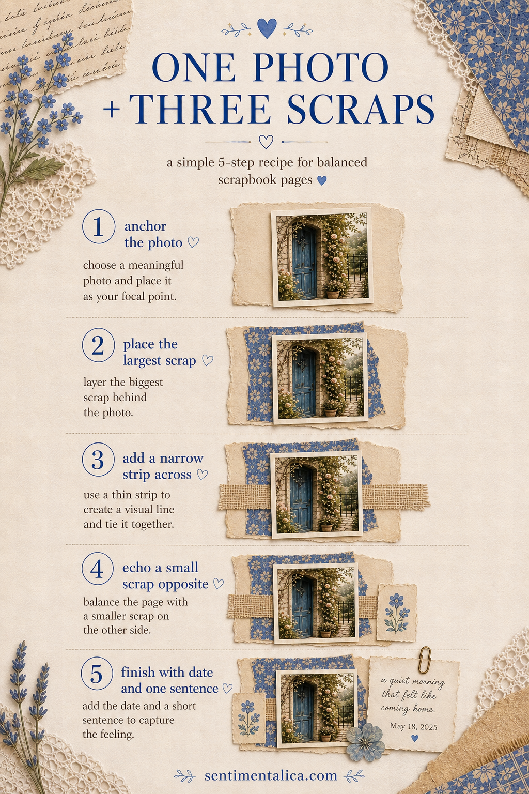
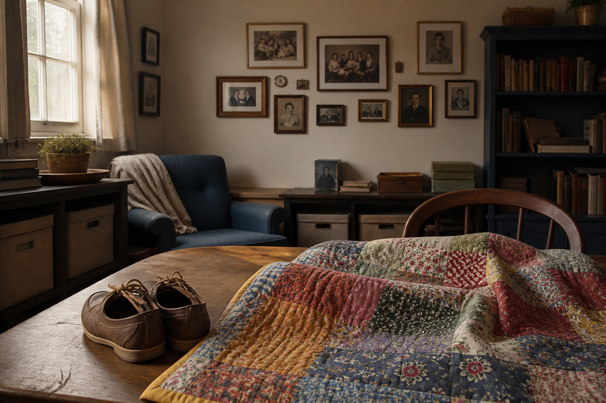

A memorable scrapbook page does not need a large supply pile. One photograph and three well-chosen scraps are enough when each piece has a clear job: support, direction, or detail.

Give each scrap a role
Choose one large quiet scrap as the photo mat, one narrow patterned strip to create direction, and one small contrasting piece for a label or date. The largest scrap should be only slightly bigger than the photograph, allowing a narrow uneven border.
Place the photograph off-center
Set the photo just above or below the page midpoint. Slide the narrow strip beneath it so the strip leads the eye toward the subject's face or the important part of the scene. Avoid pointing the strip toward an empty outer edge.

Build a visual triangle
Place the smallest scrap near one corner of the photo. Repeat its color in two tiny marks: a thread knot, ink dot, staple, or handwritten date. Those three touches form a visual triangle and make the page feel settled without extra embellishments.
Write beside, not around, the picture
Keep the journaling in one compact block. Start with what happened, then add one sensory detail that the photograph cannot show—a sound, a temperature, or a phrase someone said. Four honest lines are more useful than filling every gap.
Do the distance test
Stand back two steps. You should see the photograph first, the directional strip second, and the small label third. If a scrap wins over the image, turn it over, tear it smaller, or reduce its contrast with a little vellum. Balance comes from hierarchy, not perfect symmetry.